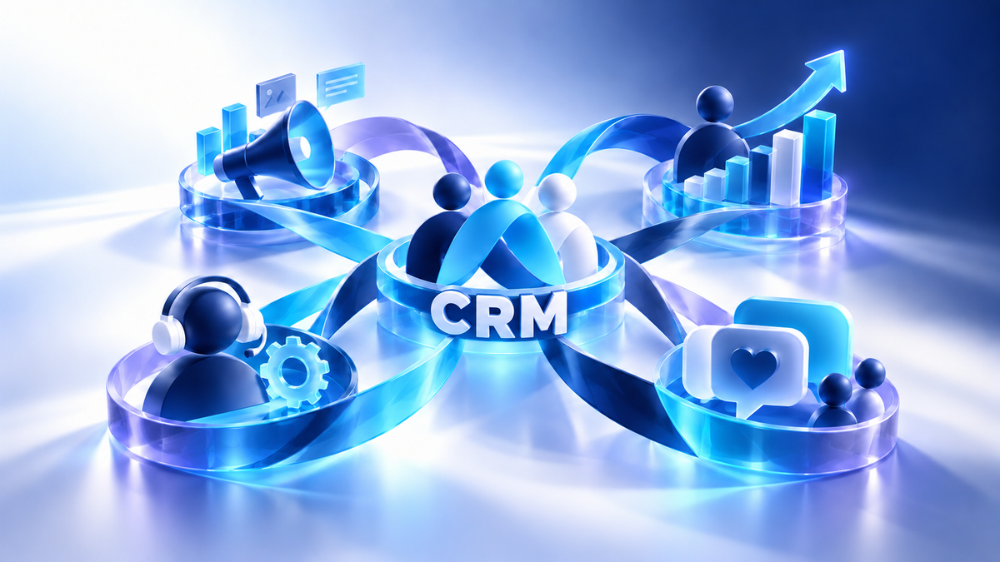

CRM consulting services
CRM that people can use and the business can rely on
We listen to our clients and translate their ideas and functionalities into the kind of simple-to-use, indispensable CRM they have always desired.
If you are looking for one off assistance, straight forward help to effectively implement your initial design or need full project life cycle management, we provide the expertise to maximise your return on investment. We have the solution for you.
- Evaluation and solution design
- Configuration and modification
- Data migration and cleansing
- Consulting, training and ongoing support

Examples of previous engagements
Hands-on delivery, from first requirements to lasting adoption
Successfully migrated a services business from SugarCRM to SFDC, managing the project from requirement gathering to data migration. Having reviewed the existing sales processes, led the build and testing phase, provided technical support and guidance, admin and end user training, plus data migration of over 40,000 records.
Led the design, development and roll out of Salesforce automation using SFDC to 300+ end users. Aligning business processes with technology.
Designed and delivered numerous bespoke training events throughout Europe for SFDC administrators, end users and Executive teams.
Developed an automated issue resolution tool, giving real time notification of issues to sales and country leaders, reducing time to close from 41 to 13 days.